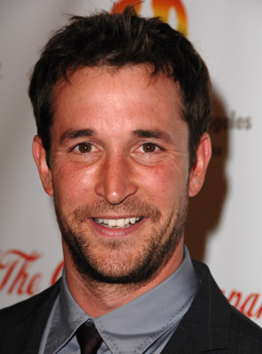
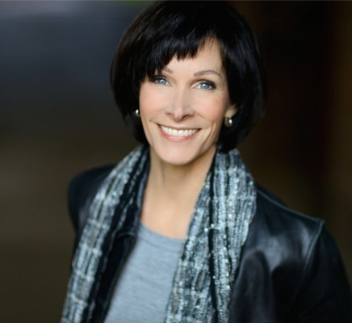
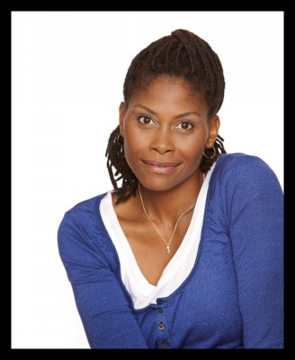

#908 Nichts als die Wahrheit
Alternativ: Nothing But the Truth

 IMDB-Wertung: 7.2 / 10
IMDB-Wertung: 7.2 / 10  Metascore: 64
Metascore: 64 
Mit der Enttarnung der CIA-Agentin Erica Van Doren ist Rachel Armstrong ein großer Coup gelungen. Doch ehe die Pulitzer-Preis-Kandidatin ihren Triumph richtig auskosten kann, findet sie sich auch schon in Handschellen wieder. Die integere Journalistin weigert sich, ihre Quelle zu offenbaren, obgleich die Enttarnung staatlicher Geheimnisträger als schwerwiegende Verletzung der nationalen Sicherheit gilt. Mit der Unterstützung des renommierten Anwalts Burnside betritt Rachel die Arena der Juristen. Doch auch Staatsanwalt Dubois geht nur seinem Job nach. Auch wenn das bedeutet, die Reporterin hinter Gitter zu bringen. Ungemütliche Bettnachbarn sind da noch das kleinste Problem: Die Zeit im Knast bringt auch die Ehe mit Politautor Ray und das Verhältnis zu ihrem Sohn ins Wanken. Wie weit kann und wird Rachel gehen, um die Quelle zu decken und ihre journalistischen Prinzipien zu schützen?
Jahr: 2008
Dauer: 108 Minuten
FSK: 12
Land: USA Studio: Yari Film Group ReleasingTonspuren: DTS - ,
Untertitel: Deutsch,
Auflösung: 1080p (1920x800) Größe: 9656 MB
Genre: Krimi, Drama, Mystery, Thriller
Regisseur: Rod Lurie
Drehbuch: Rod Lurie
Soundtrack: Larry Groupé
Darsteller:
 Kate Beckinsale als Rachel Armstrong
Kate Beckinsale als Rachel Armstrong Matt Dillon als Patton Dubois
Matt Dillon als Patton Dubois Angela Bassett als Bonnie Benjamin
Angela Bassett als Bonnie Benjamin Alan Alda als Albert Burnside
Alan Alda als Albert Burnside Vera Farmiga als Erica Van Doren
Vera Farmiga als Erica Van Doren David Schwimmer als Ray Armstrong
David Schwimmer als Ray Armstrong Courtney B. Vance als Agent O'Hara
Courtney B. Vance als Agent O'Hara-  Noah Wyle als Avril Aaronson
- Preston Bailey als Timmy Armstrong
 Julie Ann Emery als Agent Boyd
Julie Ann Emery als Agent Boyd Robert Harvey als Warden
Robert Harvey als Warden Michael O'Neill als CIA Director
Michael O'Neill als CIA Director- Kristen Shaw als Angel
- Angelica Page als Molly Meyers
 Jamey Sheridan als Oscar Van Doren
Jamey Sheridan als Oscar Van Doren- Jenny Odle Madden als Olivia
- Rod Lurie als Larry
 Clay Chamberlin als Editor #4
Clay Chamberlin als Editor #4-  Ashley LeConte Campbell als Teacher
- Dan Abrams als Himself
- Jon W. Sparks als Rumpled Man
- Erin Dangler als Gretchen Monroe
- Kelly Holleman als Clerk, Sun Times
- Allen O. Battle III als Gentleman
-  Verda Davenport als Police Clerk
- Merle Dandridge als Celia
- Geoff Falk als FBI Agent , uncredited
- Katie Groshong als Sandy , uncredited
- Laurie Johnson als Grand Juror , uncredited
- Wendell Kinney als Chef , uncredited
- Emily Williams als Bar Patron , uncredited
- Floyd Abrams als Judge Hall
- Kristen Bough als Allison Van Doren
- Pamela Jones als Guard Washington
- Jennifer McCoy als Jesse
- David Bridgewater als Riggens
- Janie Paris als Editor #2
 Jim Palmer als Editor #3
Jim Palmer als Editor #3- Joseph Murphy als Bloomington
 Scott Williamson als President Lyman
Scott Williamson als President Lyman- Elizabeth Anne Wilson als Producer
- Randall Hartzog als Principal
- Craig Wright als Male Guard
- Phil Darius Wallace als FBI Agent Coddington
- Teri Itkin als Miss Potter
- Angie Gilbert als Trustee
- Antonio Morton als Deputy
- Blake Brooks als Intern
- Carol Russell-Woloshin als Waitress
- Robert P. Campbell als Polygraphist
Datei: X:\2008(N-Z)\Nichts als die Wahrheit (2008, FSK12, 1920x800).mkv seit 16.04.2015
Festplatte: HD 2008(G-Z)-2009(A-F)
 Es gibt insgesamt 91 Filme in der Gruppe '2008(N-Z)'
Es gibt insgesamt 91 Filme in der Gruppe '2008(N-Z)'